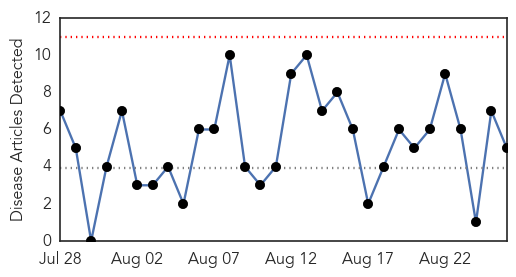
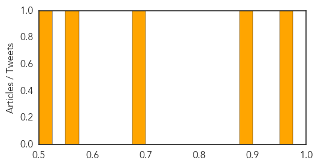

West Nile Virus
30-Day Web Trend
0 alerts, 0 warnings

30-Day Twitter Trend
0 alerts, 0 warnings

Article Locations
Article Confidences
Top Articles:
- 0.956
- Weld County seeing more West NIle virus cases
- 0.893
- West Nile virus infects two horses in B.C.’s Southern Interior
- 0.676
- West Nile claims Madison County resident, officials say
- 0.558
- Illinois mayor survives West Nile, urges caution
- 0.512
- Passaic County plans targeted mosquito spraying on Wednesday
Top Tweets:
-
No tweets found for Aug 26, 2014
Mumps
30-Day Web Trend
30 alerts, 0 warnings
30-Day Twitter Trend
1 alerts, 0 warnings
Article Locations
Article Confidences

Top Articles:
Top Tweets:
-
No tweets found for Aug 26, 2014